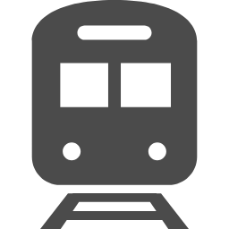
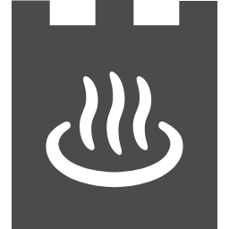

行程表｜2026年1月15日（週四）– 1月17日（週六）
在這裡查看3天的行程安排。
行程中會參觀會津若松的象徵——鶴城。
Day 1｜1月15日（週四）
YOLO工作人員：鎌田 真有（Kamada Mayu）
標識：
出發
9:40
東京站
JR新幹線Yamabiko 55號
到達
出發
10:58
11:15

到達
12:31
會津若松站
到達
17:33
會津武家屋敷前
免費接駁巴士
到達
出發
17:45
18:00

居酒屋巡遊
第一家由YOLO工作人員帶隊開始😋
晚餐
現場解散
Day 2｜1月16日（週五）
Day 3｜1月17日（週六）
出發
9:45
大川莊
免費接駁巴士
到達
10:00
蘆之牧溫泉雪上樂園
雪上體驗
享受清晨的雪❄️
入場費1000日圓＋服裝租借費600日圓（需現金支付）。
★體驗費用（購買1000日圓5張200日圓券後可使用）
・雪圈・雪橇 …免費租借（數量有限）
・香蕉船・雪圈 …2圈600日圓
・小型雪地摩托車租借 …10分鐘1200日圓、20分鐘2200日圓
・雪屋 …1間30分鐘1600日圓 附贈人數份的麻糬
出發
11:30
蘆之牧溫泉雪上樂園
免費接駁巴士
到達
11:40
蘆之牧溫泉站
電車
到達
出發
12:05
12:15
猿遊號
到達
12:35
大內宿入口
自由活動（大內宿內）
午餐＆紀念品
※在這裡購買紀念品
出發
13:55
大內宿
猿遊號
到達
14:15
湯野上溫泉站
出發
14:52
湯野上溫泉站
會津鐵道快速Relay 119號 另付190日圓
到達
15:26
會津若松站
高速巴士
到達
出發
17:40
17:40
步行
到達
出發
17:44
18:06
JR新幹線Yamabiko 152號
填寫旅後問卷
到達
19:28
東京站 解散
每日任務
每天請完成以下兩件事：
- 提交「精選照片」
- 在社群媒體發布1次（每天1次）
詳情請查看每日任務頁面。
緊急聯絡方式
派出所（會津若松市管轄）
- 站前派出所（會津若松站）: 0242-22-1877 地圖
- 城前派出所（東山溫泉）: 0242-27-0796 地圖
- 大戶駐在所（蘆之牧溫泉）: 0242-92-2110 地圖
醫院
- 會津中央醫院: 0242-25-1515 地圖
- 會津醫療中心: 0242-75-2100 地圖
- 夜間急診中心: 0242-28-1199 地圖
負責人聯絡方式
- YOLO JAPAN 鎌田（Kamada）: 080-3099-4493